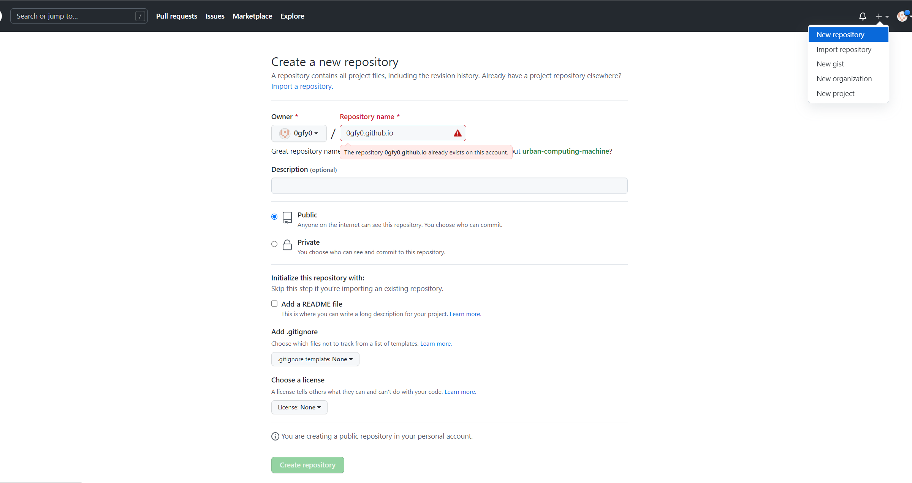
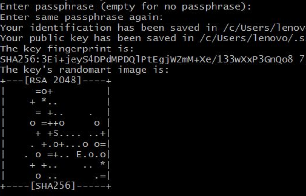
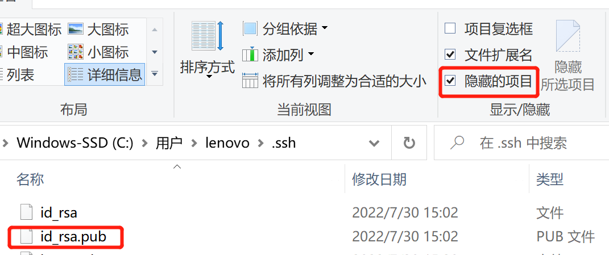
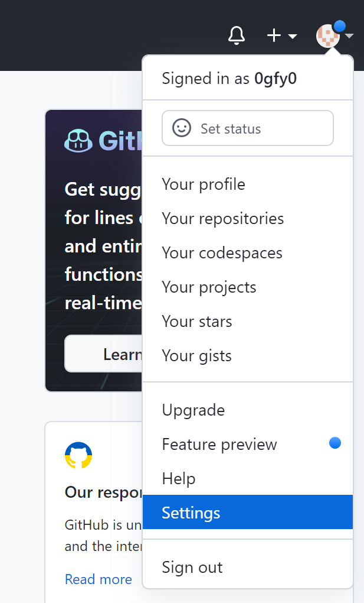
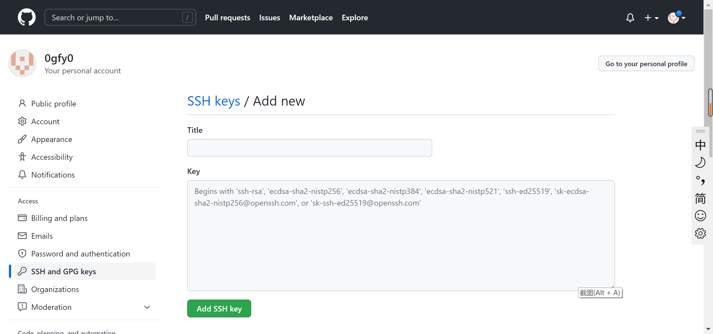
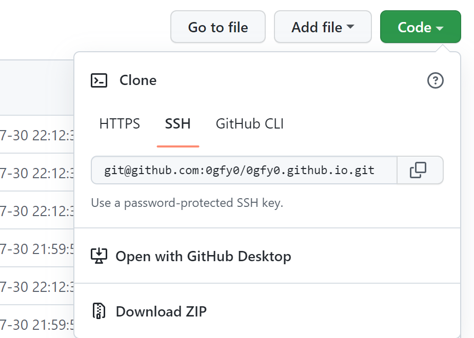

<!DOCTYPE html>


<html lang="zh-CN">
  

    <head>
      <meta charset="utf-8" />
        
      <meta name="description" content="to be continued..." />
      
      <meta
        name="viewport"
        content="width=device-width, initial-scale=1, maximum-scale=1"
      />
      <title>Github+Hexo搭建个人博客 |  Guo FY&#39;s blog</title>
  <meta name="generator" content="hexo-theme-ayer">
      
      <link rel="shortcut icon" href="/gIcon.ico" />
       
<link rel="stylesheet" href="/dist/main.css">

      
<link rel="stylesheet" href="/css/fonts/remixicon.css">

      
<link rel="stylesheet" href="/css/custom.css">
 
      <script src="https://cdn.staticfile.org/pace/1.2.4/pace.min.js"></script>
       
 

      <link
        rel="stylesheet"
        href="https://cdn.jsdelivr.net/npm/@sweetalert2/theme-bulma@5.0.1/bulma.min.css"
      />
      <script src="https://cdn.jsdelivr.net/npm/sweetalert2@11.0.19/dist/sweetalert2.min.js"></script>

      <!-- mermaid -->
      
      <style>
        .swal2-styled.swal2-confirm {
          font-size: 1.6rem;
        }
      </style>
    <link rel="alternate" href="/atom.xml" title="Guo FY's blog" type="application/atom+xml">
</head>
  </html>
</html>


<body>
  <div id="app">
    
      
    <main class="content on">
      <section class="outer">
  <article
  id="post-git0"
  class="article article-type-post"
  itemscope
  itemprop="blogPost"
  data-scroll-reveal
>
  <div class="article-inner">
    
    <header class="article-header">
       
<h1 class="article-title sea-center" style="border-left:0" itemprop="name">
  Github+Hexo搭建个人博客
</h1>
 

      
    </header>
     
    <div class="article-meta">
      <a href="/2022/07/30/git0/" class="article-date">
  <time datetime="2022-07-30T14:40:58.000Z" itemprop="datePublished">2022-07-30</time>
</a> 
  <div class="article-category">
    <a class="article-category-link" href="/categories/web-development/">web development</a>
  </div>
  
<div class="word_count">
    <span class="post-time">
        <span class="post-meta-item-icon">
            <i class="ri-quill-pen-line"></i>
            <span class="post-meta-item-text"> 字数统计:</span>
            <span class="post-count">2.1k</span>
        </span>
    </span>

    <span class="post-time">
        &nbsp; | &nbsp;
        <span class="post-meta-item-icon">
            <i class="ri-book-open-line"></i>
            <span class="post-meta-item-text"> 阅读时长≈</span>
            <span class="post-count">8 分钟</span>
        </span>
    </span>
</div>
 
    </div>
      
    <div class="tocbot"></div>


  
    <div class="article-entry" itemprop="articleBody">
       
  <h2 id="1-环境准备"><a href="#1-环境准备" class="headerlink" title="1. 环境准备"></a>1. 环境准备</h2><ul>
<li><a target="_blank" rel="noopener" href="https://nodejs.org/zh-cn/">Node.js</a> （自带npm/建议12.0及以上版本）</li>
<li><a target="_blank" rel="noopener" href="https://git-scm.com/">Git</a></li>
<li>Github账号</li>
</ul>
<h2 id="2-新建仓库"><a href="#2-新建仓库" class="headerlink" title="2. 新建仓库"></a>2. 新建仓库</h2><p>登陆GitHub，点击右上角的 <strong>+<strong>号，选择</strong>New repository</strong> 创建Repository项目进行管理  </p>
<p></p>
<p>Repository name是username.github.io，这里我已经创建过了。点击<strong>Create repository</strong> </p>
<h2 id="3-配置SSH-Keys"><a href="#3-配置SSH-Keys" class="headerlink" title="3. 配置SSH Keys"></a>3. 配置SSH Keys</h2><ol>
<li><p>打开Git Bash</p>
</li>
<li><p>检查电脑上现有的SSH Key  </p>
<figure class="highlight plaintext"><table><tr><td class="gutter"><pre><span class="line">1</span><br></pre></td><td class="code"><pre><span class="line">$ cd ~/.ssh</span><br></pre></td></tr></table></figure>

<p>如果显示 <strong>No such file or directory</strong>，说明这是你第一次用git，我们来创建一下</p>
</li>
<li><p>生成新的SSH Key  </p>
<ul>
<li>这里的邮箱地址，输入Github的邮箱地址</li>
</ul>
<figure class="highlight plaintext"><table><tr><td class="gutter"><pre><span class="line">1</span><br><span class="line">2</span><br><span class="line">3</span><br></pre></td><td class="code"><pre><span class="line">$ ssh-keygen -t rsa -C &quot;邮件地址@youremail.com&quot;</span><br><span class="line">Generating public/private rsa key pair.</span><br><span class="line">Enter file in which to save the key (/Users/your_user_directory/.ssh/id_rsa):&lt;回车就好&gt;</span><br></pre></td></tr></table></figure>


<ul>
<li>然后系统会要你输入密码，作为提交项目时使用的，也可以不设密码，直接为空，回车即可  </li>
</ul>
<p>PS: 输入密码时是没有输入痕迹的  </p>
<figure class="highlight plaintext"><table><tr><td class="gutter"><pre><span class="line">1</span><br><span class="line">2</span><br></pre></td><td class="code"><pre><span class="line">Enter passphrase (empty for no passphrase):&lt;设置密码&gt;</span><br><span class="line">Enter same passphrase again:&lt;再次输入密码&gt;</span><br></pre></td></tr></table></figure>


<ul>
<li><p>最后显示这样的界面，就成功设置SSH Key了：  </p>
</li>
<li><p>添加SSH Key到Github上  </p>
<p>在本地文件夹找到id_rsa.pub文件（一般在<code>C:\Users\系统账户名\.ssh</code>中），没找到的勾选“查看”中的 文件扩展名 隐藏的项目  </p>
</li>
<li><p>使用记事本打开该文件，复制全部内容</p>
<p>点击右上角头像，选中<strong>Setting</strong></p>



<p>继续选中左边菜单栏的<strong>SSH and GPG keys</strong>  </p>
<p></p>
<p>Title随便写个名字，在Key部分输入刚才复制的内容，点击<strong>Add SSH Key</strong>  </p>
</li>
</ul>
</li>
<li><p>测试</p>
<p>回到git bash 框里，输入以下代码</p>
<figure class="highlight plaintext"><table><tr><td class="gutter"><pre><span class="line">1</span><br></pre></td><td class="code"><pre><span class="line">$ ssh -T git@github.com</span><br></pre></td></tr></table></figure>


<p>接着回车-&gt;’yes’&gt;回车-&gt;输入密码回车</p>
<p>看到“You’ve successfully authenticated…”，即为成功！&#x1F337;</p>
</li>
</ol>
<p>关于SSH Key的配置和故障排除，请参考：<a target="_blank" rel="noopener" href="https://help.github.com/articles/connecting-to-github-with-ssh/">Connecting to GitHub with SSH</a></p>
<h2 id="4-设置用户信息"><a href="#4-设置用户信息" class="headerlink" title="4. 设置用户信息"></a>4. 设置用户信息</h2><p>现在已经可以通过 SSH 链接到 GitHub 了！现在来完善一些个人信息:</p>
<figure class="highlight plaintext"><table><tr><td class="gutter"><pre><span class="line">1</span><br><span class="line">2</span><br></pre></td><td class="code"><pre><span class="line">$ git config --global user.name &quot;username&quot; //输入注册时你的用户名</span><br><span class="line">$ git config --global user.email  &quot;user@email&quot; //填写你的注册邮箱</span><br></pre></td></tr></table></figure>


<p>GitHub 也是用这些信息来做权限的处理，输入上面的代码来设置个人信息，把名称和邮箱替换成你自己的就可以<br>到此，SSH Key配置成功啦，本机已成功连接到 Github！ &#x1F604;  </p>
<h2 id="5-搭建Hexo博客"><a href="#5-搭建Hexo博客" class="headerlink" title="5. 搭建Hexo博客"></a>5. 搭建Hexo博客</h2><ol>
<li><p>安装hexo</p>
<figure class="highlight plaintext"><table><tr><td class="gutter"><pre><span class="line">1</span><br><span class="line">2</span><br></pre></td><td class="code"><pre><span class="line">$ cd</span><br><span class="line">$ npm install -g hexo</span><br></pre></td></tr></table></figure></li>
<li><p>初始化hexo，创建独立博客项目文件夹</p>
<ul>
<li>安装完成后，关掉之前的<strong>Git Bash</strong>窗口。在本地创建一个与 Repository中博客项目同名的文件夹username.github.io(如F:/0gfy0.github.io)</li>
<li>在文件夹上点击鼠标右键，选择 Git bash here </li>
</ul>
<p><strong>在进行博客搭建工作时，每次使用命令都要在D:/0gfy0.github.io目录下。</strong></p>
<p>执行下面的指令，Hexo 就会自动在 D:/0gfy0.github.io 文件夹建立独立博客所需要的所有文件啦！</p>
<figure class="highlight plaintext"><table><tr><td class="gutter"><pre><span class="line">1</span><br></pre></td><td class="code"><pre><span class="line">$ hexo init</span><br></pre></td></tr></table></figure></li>
<li><p>安装依赖包</p>
<figure class="highlight plaintext"><table><tr><td class="gutter"><pre><span class="line">1</span><br></pre></td><td class="code"><pre><span class="line">$ npm install</span><br></pre></td></tr></table></figure></li>
<li><p>确保git部署</p>
<figure class="highlight plaintext"><table><tr><td class="gutter"><pre><span class="line">1</span><br></pre></td><td class="code"><pre><span class="line">$ npm install hexo-deployer-git --save</span><br></pre></td></tr></table></figure></li>
<li><p>启动服务站点</p>
<ul>
<li><p>现在已经搭建好本地的 Hexo 博客了！👏    执行完下面的命令就可以到浏览器输入 localhost:4000 查看到啦！</p>
<figure class="highlight plaintext"><table><tr><td class="gutter"><pre><span class="line">1</span><br><span class="line">2</span><br></pre></td><td class="code"><pre><span class="line">$ hexo g  //每次进行相应改动都要hexo g 生成一下</span><br><span class="line">$ hexo s  //启动服务预览</span><br></pre></td></tr></table></figure></li>
</ul>
</li>
<li><p>设置主题  </p>
<p>执行完 hexo init 命令后会给一个默认的主题：landscape  +  一篇写好的示例文章：Hello World</p>
<p>你也可以到官网你喜欢的主题进行下载:</p>
<ul>
<li><a target="_blank" rel="noopener" href="https://hexo.io/themes/">hexo themes</a>  </li>
<li><a target="_blank" rel="noopener" href="https://www.zhihu.com/question/24422335/answer/46357100">知乎：有哪些好看的 Hexo 主题？</a></li>
</ul>
<p>找到之后复制一下主题的克隆地址</p>
<p>然后通过git命令下载，clone到你本地的博客文件夹<strong>themes文件夹下</strong></p>
<figure class="highlight plaintext"><table><tr><td class="gutter"><pre><span class="line">1</span><br></pre></td><td class="code"><pre><span class="line">$ git clone 复制的地址 themes/typing</span><br></pre></td></tr></table></figure></li>
<li><p>修改整站配置文件<br>把blog.io中文件都点开看一遍，主要配置文件是 _config.yml，推荐使用 nodepad++ 打开。</p>
<p>(1)博客名字及作者信息：_config.yml<br>(2)个人介绍页面：about.md</p>
<figure class="highlight plaintext"><table><tr><td class="gutter"><pre><span class="line">1</span><br><span class="line">2</span><br><span class="line">3</span><br><span class="line">4</span><br><span class="line">5</span><br><span class="line">6</span><br><span class="line">7</span><br><span class="line">8</span><br><span class="line">9</span><br><span class="line">10</span><br><span class="line">11</span><br><span class="line">12</span><br><span class="line">13</span><br><span class="line">14</span><br><span class="line">15</span><br><span class="line">16</span><br><span class="line">17</span><br><span class="line">18</span><br><span class="line">19</span><br><span class="line">20</span><br><span class="line">21</span><br><span class="line">22</span><br><span class="line">23</span><br><span class="line">24</span><br><span class="line">25</span><br><span class="line">26</span><br><span class="line">27</span><br><span class="line">28</span><br><span class="line">29</span><br><span class="line">30</span><br><span class="line">31</span><br><span class="line">32</span><br><span class="line">33</span><br><span class="line">34</span><br><span class="line">35</span><br><span class="line">36</span><br><span class="line">37</span><br><span class="line">38</span><br><span class="line">39</span><br><span class="line">40</span><br><span class="line">41</span><br><span class="line">42</span><br><span class="line">43</span><br><span class="line">44</span><br><span class="line">45</span><br><span class="line">46</span><br><span class="line">47</span><br><span class="line">48</span><br><span class="line">49</span><br><span class="line">50</span><br><span class="line">51</span><br><span class="line">52</span><br><span class="line">53</span><br><span class="line">54</span><br><span class="line">55</span><br><span class="line">56</span><br><span class="line">57</span><br><span class="line">58</span><br><span class="line">59</span><br><span class="line">60</span><br><span class="line">61</span><br><span class="line">62</span><br><span class="line">63</span><br><span class="line">64</span><br><span class="line">65</span><br><span class="line">66</span><br><span class="line">67</span><br><span class="line">68</span><br><span class="line">69</span><br><span class="line">70</span><br><span class="line">71</span><br><span class="line">72</span><br><span class="line">73</span><br><span class="line">74</span><br><span class="line">75</span><br><span class="line">76</span><br><span class="line">77</span><br><span class="line">78</span><br><span class="line">79</span><br><span class="line">80</span><br><span class="line">81</span><br><span class="line">82</span><br><span class="line">83</span><br><span class="line">84</span><br><span class="line">85</span><br><span class="line">86</span><br><span class="line">87</span><br><span class="line">88</span><br></pre></td><td class="code"><pre><span class="line">这里贴一份网上看到的  可以复制替换原来的  但是替换之前最好备份 可能会出错</span><br><span class="line">那要么你就对照着看一下改就好</span><br><span class="line"></span><br><span class="line"># Hexo Configuration</span><br><span class="line">## Docs: http://zespia.tw/hexo/docs/configure.html</span><br><span class="line">## Source: https://github.com/tommy351/hexo/</span><br><span class="line"></span><br><span class="line"># Site 这里的配置，哪项配置反映在哪里，可以参考我的博客</span><br><span class="line">title: My Blog #博客名</span><br><span class="line">subtitle: to be continued... #副标题</span><br><span class="line">description: My blog #给搜索引擎看的，对网站的描述，可以自定义</span><br><span class="line">author: Yourname #作者，在博客底部可以看到</span><br><span class="line">email: yourname@yourmail.com #你的联系邮箱</span><br><span class="line">language: zh-CN #中文。如果不填则默认英文</span><br><span class="line"></span><br><span class="line"># URL #这项暂不配置，绑定域名后，欲创建sitemap.xml需要配置该项</span><br><span class="line">## If your site is put in a subdirectory, set url as &#x27;http://yoursite.com/child&#x27; and root as &#x27;/child/&#x27;</span><br><span class="line">url: http://yoursite.com</span><br><span class="line">root: /</span><br><span class="line">permalink: :year/:month/:day/:title/</span><br><span class="line">tag_dir: tags</span><br><span class="line">archive_dir: archives</span><br><span class="line">category_dir: categories</span><br><span class="line"></span><br><span class="line"># Writing 文章布局、写作格式的定义，不修改</span><br><span class="line">new_post_name: :title.md # File name of new posts</span><br><span class="line">default_layout: post</span><br><span class="line">auto_spacing: false # Add spaces between asian characters and western characters</span><br><span class="line">titlecase: false # Transform title into titlecase</span><br><span class="line">max_open_file: 100</span><br><span class="line">filename_case: 0</span><br><span class="line">highlight:</span><br><span class="line">  enable: true</span><br><span class="line">  backtick_code_block: true</span><br><span class="line">  line_number: true</span><br><span class="line">  tab_replace:</span><br><span class="line"></span><br><span class="line"># Category &amp; Tag</span><br><span class="line">default_category: uncategorized</span><br><span class="line">category_map:</span><br><span class="line">tag_map:</span><br><span class="line"></span><br><span class="line"># Archives 默认值为2，这里都修改为1，相应页面就只会列出标题，而非全文</span><br><span class="line">## 2: Enable pagination</span><br><span class="line">## 1: Disable pagination</span><br><span class="line">## 0: Fully Disable</span><br><span class="line">archive: 1</span><br><span class="line">category: 1</span><br><span class="line">tag: 1</span><br><span class="line"></span><br><span class="line"># Server 不修改</span><br><span class="line">## Hexo uses Connect as a server</span><br><span class="line">## You can customize the logger format as defined in</span><br><span class="line">## http://www.senchalabs.org/connect/logger.html</span><br><span class="line">port: 4000</span><br><span class="line">logger: false</span><br><span class="line">logger_format:</span><br><span class="line"></span><br><span class="line"># Date / Time format 日期格式，可以修改成自己喜欢的格式</span><br><span class="line">## Hexo uses Moment.js to parse and display date</span><br><span class="line">## You can customize the date format as defined in</span><br><span class="line">## http://momentjs.com/docs/#/displaying/format/</span><br><span class="line">date_format: YYYY-M-D</span><br><span class="line">time_format: H:mm:ss</span><br><span class="line"></span><br><span class="line"># Pagination 每页显示文章数，可以自定义，贴主设置的是10</span><br><span class="line">## Set per_page to 0 to disable pagination</span><br><span class="line">per_page: 10</span><br><span class="line">pagination_dir: page</span><br><span class="line"></span><br><span class="line"># Disqus Disqus插件，我们会替换成“多说”，不修改</span><br><span class="line">disqus_shortname:</span><br><span class="line"></span><br><span class="line"># Extensions 这里配置站点所用主题和插件，暂时默认</span><br><span class="line">## Plugins: https://github.com/tommy351/hexo/wiki/Plugins</span><br><span class="line">## Themes: https://github.com/tommy351/hexo/wiki/Themes</span><br><span class="line">theme: landscape</span><br><span class="line">exclude_generator:</span><br><span class="line">plugins:</span><br><span class="line">- hexo-generator-feed</span><br><span class="line">- hexo-generator-sitemap</span><br><span class="line"></span><br><span class="line"># Deployment 站点部署到github要配置</span><br><span class="line">## Docs: http://zespia.tw/hexo/docs/deploy.html</span><br><span class="line">deploy:</span><br><span class="line">  type: git</span><br><span class="line">  repository: </span><br><span class="line">  branch: master</span><br></pre></td></tr></table></figure>

<p>【踩坑】<code>_config.yml</code>文件里的<code>url</code>和<code>root</code>一定要设置。url填的是你的部署的地址，root填的是url最后一个斜杠后的那个地址，要对应起来，不然部署的博客可能会没有样式。</p>
<ul>
<li>启用新下载的主题<br>在刚打开的的_config.yml 文件中，找到“# Extensions”，把默认主题 landscape 修改为刚刚下载下来的主题名</li>
</ul>
<p>【提示】username.github.io 里有两个 config.yml 文件，一个在根目录，一个在 theme 下，现在修改的是在根目录下的。</p>
<p>【踩坑】下载后主题，有的需要按照它的官方文档进行配置，不然直接运行可能会页面空白。</p>
<ul>
<li><p>更新主题<br>git bash 里执行</p>
<figure class="highlight plaintext"><table><tr><td class="gutter"><pre><span class="line">1</span><br><span class="line">2</span><br></pre></td><td class="code"><pre><span class="line">$ cd themes/主题名</span><br><span class="line">$ git pull</span><br></pre></td></tr></table></figure></li>
<li><p>本地查看调试<br>每次修改都要hexo g 生成一下</p>
<figure class="highlight plaintext"><table><tr><td class="gutter"><pre><span class="line">1</span><br><span class="line">2</span><br></pre></td><td class="code"><pre><span class="line">$ hexo g #生成</span><br><span class="line">$ hexo s #启动本地服务，进行文章预览调试，退出服务用Ctrl+c</span><br></pre></td></tr></table></figure></li>
</ul>
<p>浏览器输入 localhost：4000 预览效果   </p>
</li>
</ol>
<h2 id="6-将博客部署到username-github-io"><a href="#6-将博客部署到username-github-io" class="headerlink" title="6. 将博客部署到username.github.io"></a>6. 将博客部署到username.github.io</h2><ul>
<li><p>复制SSH码<br>进入 Github 个人主页中的 Repository，复制新建的独立博客项目username.github.io的 SSH码</p>
</li>
<li><p>编辑整站配置文件<br>打开 D:/username.github.io/_config.yml,把刚刚复制的 SSH码粘贴到<strong>repository：</strong>后面，别忘了冒号后要空一格。</p>
<figure class="highlight plaintext"><table><tr><td class="gutter"><pre><span class="line">1</span><br><span class="line">2</span><br><span class="line">3</span><br><span class="line">4</span><br></pre></td><td class="code"><pre><span class="line">deploy:</span><br><span class="line">  type: git</span><br><span class="line">  repository: git@github.com:username/username.github.io.git</span><br><span class="line">  branch: master</span><br></pre></td></tr></table></figure></li>
<li><p>执行下列指令即可完成部署<br>【提示】每次修改本地文件后，需要 hexo g 才能保存。每次使用命令时，都要在你的博客文件夹目录下：<br>在D:/username.github.io/ 右键打开 <strong>Git Bash Here</strong></p>
<figure class="highlight plaintext"><table><tr><td class="gutter"><pre><span class="line">1</span><br><span class="line">2</span><br><span class="line">3</span><br><span class="line">4</span><br></pre></td><td class="code"><pre><span class="line"># 黄金三命令</span><br><span class="line">$ hexo g  //(g = generate 修改生产)</span><br><span class="line">$ hexo s  //(s = server   修改预览)</span><br><span class="line">$ hexo d  //(d = deploy   修改部署)</span><br></pre></td></tr></table></figure></li>
</ul>
<p>【提示】如果在配置 SSH key 时设置了密码，执行 hexo d 命令上传文件时需要输入密码进行确认，会出现一个小框框。</p>
<h2 id="7-写博客"><a href="#7-写博客" class="headerlink" title="7. 写博客"></a>7. 写博客</h2><p>在D:\username.github.io\source_posts的空白处右键Git Bash Here</p>
<figure class="highlight plaintext"><table><tr><td class="gutter"><pre><span class="line">1</span><br></pre></td><td class="code"><pre><span class="line">hexo new &#x27;article&#x27;</span><br></pre></td></tr></table></figure>


<p>此时已经在D:\username.github.io\source_posts目录下有一个 article.md的Markdown文件  </p>
<p>文件头部会自动有如下设置，可在tags中添加该篇文章所属的标签，方便管理统计：</p>
<figure class="highlight plaintext"><table><tr><td class="gutter"><pre><span class="line">1</span><br><span class="line">2</span><br><span class="line">3</span><br><span class="line">4</span><br><span class="line">5</span><br></pre></td><td class="code"><pre><span class="line">title: article</span><br><span class="line">date: 2022-07-30 22:40:58</span><br><span class="line">tags: </span><br><span class="line">- tag1</span><br><span class="line">- tag2</span><br></pre></td></tr></table></figure>

<p>Hexo的博客都是用Markdown写的。</p>
<p>关于Markdown的语法可参考：<a href="/2022/07/31/markdown">Markdown 写作语法</a></p>
<p>搭建参考：<a target="_blank" rel="noopener" href="http://codewithzhangyi.com/2018/04/19/%E5%A6%82%E4%BD%95%E6%90%AD%E5%BB%BA%E8%87%AA%E5%B7%B1%E7%9A%84%E4%B8%AA%E4%BA%BA%E7%BD%91%E7%AB%99%EF%BC%88%E4%B8%8A%EF%BC%89/">如何搭建自己的个人网站</a></p>
 
      <!-- reward -->
      
    </div>
    

    <!-- copyright -->
    
    <div class="declare">
      <ul class="post-copyright">
        <li>
          <i class="ri-copyright-line"></i>
          <strong>版权声明： </strong>
          
          本博客所有文章除特别声明外，著作权归作者所有。转载请注明出处！
          
        </li>
      </ul>
    </div>
    
    <footer class="article-footer">
       
<div class="share-btn">
      <span class="share-sns share-outer">
        <i class="ri-share-forward-line"></i>
        分享
      </span>
      <div class="share-wrap">
        <i class="arrow"></i>
        <div class="share-icons">
          
          <a class="weibo share-sns" href="javascript:;" data-type="weibo">
            <i class="ri-weibo-fill"></i>
          </a>
          <a class="weixin share-sns wxFab" href="javascript:;" data-type="weixin">
            <i class="ri-wechat-fill"></i>
          </a>
          <a class="qq share-sns" href="javascript:;" data-type="qq">
            <i class="ri-qq-fill"></i>
          </a>
          <a class="douban share-sns" href="javascript:;" data-type="douban">
            <i class="ri-douban-line"></i>
          </a>
          <!-- <a class="qzone share-sns" href="javascript:;" data-type="qzone">
            <i class="icon icon-qzone"></i>
          </a> -->
          
          <a class="facebook share-sns" href="javascript:;" data-type="facebook">
            <i class="ri-facebook-circle-fill"></i>
          </a>
          <a class="twitter share-sns" href="javascript:;" data-type="twitter">
            <i class="ri-twitter-fill"></i>
          </a>
          <a class="google share-sns" href="javascript:;" data-type="google">
            <i class="ri-google-fill"></i>
          </a>
        </div>
      </div>
</div>

<div class="wx-share-modal">
    <a class="modal-close" href="javascript:;"><i class="ri-close-circle-line"></i></a>
    <p>扫一扫，分享到微信</p>
    <div class="wx-qrcode">
      
    </div>
</div>

<div id="share-mask"></div>  
  <ul class="article-tag-list" itemprop="keywords"><li class="article-tag-list-item"><a class="article-tag-list-link" href="/tags/github/" rel="tag">github</a></li><li class="article-tag-list-item"><a class="article-tag-list-link" href="/tags/personal-website/" rel="tag">personal website</a></li></ul>

    </footer>
  </div>

   
  <nav class="article-nav">
    
      <a href="/2022/07/31/markdown/" class="article-nav-link">
        <strong class="article-nav-caption">上一篇</strong>
        <div class="article-nav-title">
          
            markdown写作语法
          
        </div>
      </a>
    
    
  </nav>

  
   
    
    <script src="https://cdn.staticfile.org/twikoo/1.4.18/twikoo.all.min.js"></script>
    <div id="twikoo" class="twikoo"></div>
    <script>
        twikoo.init({
            envId: ""
        })
    </script>
 
</article>

</section>
      <footer class="footer">
  <div class="outer">
    <ul>
      <li>
        Copyrights &copy;
        2022-2023
        <i class="ri-heart-fill heart_icon"></i> Guo Fengyue
      </li>
    </ul>
    <ul>
      <li>
        
      </li>
    </ul>
    <ul>
      <li>
        
        
        <span>
  <span><i class="ri-user-3-fill"></i>访问人数:<span id="busuanzi_value_site_uv"></span></span>
  <span class="division">|</span>
  <span><i class="ri-eye-fill"></i>浏览次数:<span id="busuanzi_value_page_pv"></span></span>
</span>
        
      </li>
    </ul>
    <ul>
      
    </ul>
    <ul>
      
    </ul>
    <ul>
      <li>
        <!-- cnzz统计 -->
        
        <script type="text/javascript" src='https://s9.cnzz.com/z_stat.php?id=1278069914&amp;web_id=1278069914'></script>
        
      </li>
    </ul>
  </div>
</footer>    
    </main>
    <div class="float_btns">
      <div class="totop" id="totop">
  <i class="ri-arrow-up-line"></i>
</div>

<div class="todark" id="todark">
  <i class="ri-moon-line"></i>
</div>

    </div>
    <aside class="sidebar on">
      <button class="navbar-toggle"></button>
<nav class="navbar">
  
  <div class="logo">
    <a href="/"></a>
  </div>
  
  <ul class="nav nav-main">
    
    <li class="nav-item">
      <a class="nav-item-link" href="/">主页</a>
    </li>
    
    <li class="nav-item">
      <a class="nav-item-link" href="/archives">归档</a>
    </li>
    
    <li class="nav-item">
      <a class="nav-item-link" href="/categories">分类</a>
    </li>
    
    <li class="nav-item">
      <a class="nav-item-link" href="/tags">标签</a>
    </li>
    
    <li class="nav-item">
      <a class="nav-item-link" href="/about">关于我</a>
    </li>
    
  </ul>
</nav>
<nav class="navbar navbar-bottom">
  <ul class="nav">
    <li class="nav-item">
      
      <a class="nav-item-link nav-item-search"  title="搜索">
        <i class="ri-search-line"></i>
      </a>
      
      
    </li>
  </ul>
</nav>
<div class="search-form-wrap">
  <div class="local-search local-search-plugin">
  <input type="search" id="local-search-input" class="local-search-input" placeholder="Search...">
  <div id="local-search-result" class="local-search-result"></div>
</div>
</div>
    </aside>
    <div id="mask"></div>

<!-- #reward -->
<div id="reward">
  <span class="close"><i class="ri-close-line"></i></span>
  <p class="reward-p"><i class="ri-cup-line"></i>请我喝杯咖啡吧~</p>
  <div class="reward-box">
    
    <div class="reward-item">
      
      <span class="reward-type">支付宝</span>
    </div>
    
    
    <div class="reward-item">
      
      <span class="reward-type">微信</span>
    </div>
    
  </div>
</div>
    
<script src="/js/jquery-3.6.0.min.js"></script>
 
<script src="/js/lazyload.min.js"></script>

<!-- Tocbot -->
 
<script src="/js/tocbot.min.js"></script>

<script>
  tocbot.init({
    tocSelector: ".tocbot",
    contentSelector: ".article-entry",
    headingSelector: "h1, h2, h3, h4, h5, h6",
    hasInnerContainers: true,
    scrollSmooth: true,
    scrollContainer: "main",
    positionFixedSelector: ".tocbot",
    positionFixedClass: "is-position-fixed",
    fixedSidebarOffset: "auto",
  });
</script>

<script src="https://cdn.staticfile.org/jquery-modal/0.9.2/jquery.modal.min.js"></script>
<link
  rel="stylesheet"
  href="https://cdn.staticfile.org/jquery-modal/0.9.2/jquery.modal.min.css"
/>
<script src="https://cdn.staticfile.org/justifiedGallery/3.8.1/js/jquery.justifiedGallery.min.js"></script>

<script src="/dist/main.js"></script>

<!-- ImageViewer -->
 <!-- Root element of PhotoSwipe. Must have class pswp. -->
<div class="pswp" tabindex="-1" role="dialog" aria-hidden="true">

    <!-- Background of PhotoSwipe. 
         It's a separate element as animating opacity is faster than rgba(). -->
    <div class="pswp__bg"></div>

    <!-- Slides wrapper with overflow:hidden. -->
    <div class="pswp__scroll-wrap">

        <!-- Container that holds slides. 
            PhotoSwipe keeps only 3 of them in the DOM to save memory.
            Don't modify these 3 pswp__item elements, data is added later on. -->
        <div class="pswp__container">
            <div class="pswp__item"></div>
            <div class="pswp__item"></div>
            <div class="pswp__item"></div>
        </div>

        <!-- Default (PhotoSwipeUI_Default) interface on top of sliding area. Can be changed. -->
        <div class="pswp__ui pswp__ui--hidden">

            <div class="pswp__top-bar">

                <!--  Controls are self-explanatory. Order can be changed. -->

                <div class="pswp__counter"></div>

                <button class="pswp__button pswp__button--close" title="Close (Esc)"></button>

                <button class="pswp__button pswp__button--share" style="display:none" title="Share"></button>

                <button class="pswp__button pswp__button--fs" title="Toggle fullscreen"></button>

                <button class="pswp__button pswp__button--zoom" title="Zoom in/out"></button>

                <!-- Preloader demo http://codepen.io/dimsemenov/pen/yyBWoR -->
                <!-- element will get class pswp__preloader--active when preloader is running -->
                <div class="pswp__preloader">
                    <div class="pswp__preloader__icn">
                        <div class="pswp__preloader__cut">
                            <div class="pswp__preloader__donut"></div>
                        </div>
                    </div>
                </div>
            </div>

            <div class="pswp__share-modal pswp__share-modal--hidden pswp__single-tap">
                <div class="pswp__share-tooltip"></div>
            </div>

            <button class="pswp__button pswp__button--arrow--left" title="Previous (arrow left)">
            </button>

            <button class="pswp__button pswp__button--arrow--right" title="Next (arrow right)">
            </button>

            <div class="pswp__caption">
                <div class="pswp__caption__center"></div>
            </div>

        </div>

    </div>

</div>

<link rel="stylesheet" href="https://cdn.staticfile.org/photoswipe/4.1.3/photoswipe.min.css">
<link rel="stylesheet" href="https://cdn.staticfile.org/photoswipe/4.1.3/default-skin/default-skin.min.css">
<script src="https://cdn.staticfile.org/photoswipe/4.1.3/photoswipe.min.js"></script>
<script src="https://cdn.staticfile.org/photoswipe/4.1.3/photoswipe-ui-default.min.js"></script>

<script>
    function viewer_init() {
        let pswpElement = document.querySelectorAll('.pswp')[0];
        let $imgArr = document.querySelectorAll(('.article-entry img:not(.reward-img)'))

        $imgArr.forEach(($em, i) => {
            $em.onclick = () => {
                // slider展开状态
                // todo: 这样不好，后面改成状态
                if (document.querySelector('.left-col.show')) return
                let items = []
                $imgArr.forEach(($em2, i2) => {
                    let img = $em2.getAttribute('data-idx', i2)
                    let src = $em2.getAttribute('data-target') || $em2.getAttribute('src')
                    let title = $em2.getAttribute('alt')
                    // 获得原图尺寸
                    const image = new Image()
                    image.src = src
                    items.push({
                        src: src,
                        w: image.width || $em2.width,
                        h: image.height || $em2.height,
                        title: title
                    })
                })
                var gallery = new PhotoSwipe(pswpElement, PhotoSwipeUI_Default, items, {
                    index: parseInt(i)
                });
                gallery.init()
            }
        })
    }
    viewer_init()
</script> 
<!-- MathJax -->

<!-- Katex -->

<!-- busuanzi  -->
 
<script src="/js/busuanzi-2.3.pure.min.js"></script>
 
<!-- ClickLove -->

<!-- ClickBoom1 -->

<!-- ClickBoom2 -->

<!-- CodeCopy -->
 
<link rel="stylesheet" href="/css/clipboard.css">
 <script src="https://cdn.staticfile.org/clipboard.js/2.0.10/clipboard.min.js"></script>
<script>
  function wait(callback, seconds) {
    var timelag = null;
    timelag = window.setTimeout(callback, seconds);
  }
  !function (e, t, a) {
    var initCopyCode = function(){
      var copyHtml = '';
      copyHtml += '<button class="btn-copy" data-clipboard-snippet="">';
      copyHtml += '<i class="ri-file-copy-2-line"></i><span>COPY</span>';
      copyHtml += '</button>';
      $(".highlight .code pre").before(copyHtml);
      $(".article pre code").before(copyHtml);
      var clipboard = new ClipboardJS('.btn-copy', {
        target: function(trigger) {
          return trigger.nextElementSibling;
        }
      });
      clipboard.on('success', function(e) {
        let $btn = $(e.trigger);
        $btn.addClass('copied');
        let $icon = $($btn.find('i'));
        $icon.removeClass('ri-file-copy-2-line');
        $icon.addClass('ri-checkbox-circle-line');
        let $span = $($btn.find('span'));
        $span[0].innerText = 'COPIED';
        
        wait(function () { // 等待两秒钟后恢复
          $icon.removeClass('ri-checkbox-circle-line');
          $icon.addClass('ri-file-copy-2-line');
          $span[0].innerText = 'COPY';
        }, 2000);
      });
      clipboard.on('error', function(e) {
        e.clearSelection();
        let $btn = $(e.trigger);
        $btn.addClass('copy-failed');
        let $icon = $($btn.find('i'));
        $icon.removeClass('ri-file-copy-2-line');
        $icon.addClass('ri-time-line');
        let $span = $($btn.find('span'));
        $span[0].innerText = 'COPY FAILED';
        
        wait(function () { // 等待两秒钟后恢复
          $icon.removeClass('ri-time-line');
          $icon.addClass('ri-file-copy-2-line');
          $span[0].innerText = 'COPY';
        }, 2000);
      });
    }
    initCopyCode();
  }(window, document);
</script>
 
<!-- CanvasBackground -->

<script>
  if (window.mermaid) {
    mermaid.initialize({ theme: "forest" });
  }
</script>


    
    

  </div>
</body>

</html>